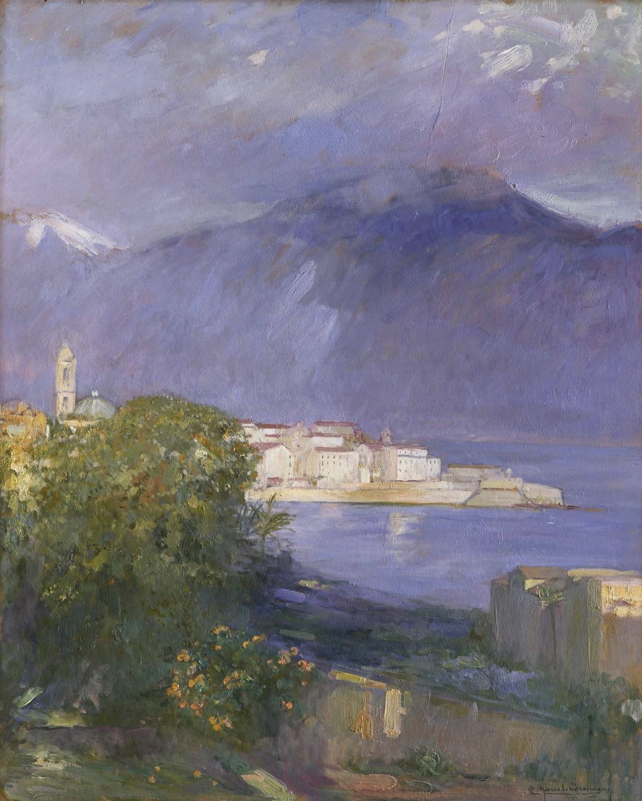

Preface
These first words are written down at the Sulztaler Alm, situated at an altitude of 1,890 m, one day before the beginning of the upcoming year 2025. This tranquil and isolated place high up in the Tiroler mountains gives me the opportunity to reflect on the year that is about to end. It was a good one, rich in experiences. Hence, I felt a sudden urge to pin them down so I may read them later and thus enjoy it all a second time. However, much was lived, and I felt it would be more beneficial to take the time to focus on a specific experience instead. My intent is to write these words for all of you who wish to embark on this adventure, to have a hint of my undertaking, and perhaps to learn from my mistakes and achievements as a traveler.
Every person sees the world through a specific type of lens, which ultimately shapes their personal story. Van Gogh's genius was to use art as a powerful medium so he could share his experience with us. His clever use of warm and vivid colors aids us in adjusting our perception, to regard the seemingly natural in a new way, evoking awe for the simple things in life and reminding us that beauty is omnipresent. With this knowledge, we merely need to be willing to see. For while sight is an ability, seeing on the other hand remains an art to be learned. Through words, I intend to achieve something similar. Perhaps it will leave you inspired and may contribute to your upcoming experiences with nature.
Hence, I decided to write about my escapade to Corsica. More precisely, I want to share my journey on the famous GR 20 - the GR standing for the French term Grande Randonnée, which translates to "Great Crossing." Indeed, it is a hike comprising 180 km in distance and 10 km in altitude. It is considered to be rather difficult, with its steep and rocky climbs, with certain sections requiring all four limbs. Renowned for its stunning natural beauty, it is frequented by large numbers of hikers every year.

My father completed the southern section of it when he was a mere teenager back in the late 1970s, and his enthusiasm when recounting it was, to me, intoxicating. Back then, free camping was permitted, and the many refuges were not yet installed. Therefore, if not completing it in full autonomy, one was forced to walk down to the closest villages for supplies, which evidently meant a massive detour to the main route. Since then, much has changed. Free camping is no longer tolerated, and most refuges have their own épiceries — rudimentary shops where one can find all the necessary things a hiker's heart requires. From canned food such as ravioli or corn to local beer, chocolate bars, and emergency kits, everything is there.
My father's story was not the only motivator. It was reinforced after watching the documentary "Ce qui compte" (French for what matters) at the 2023 Summer Edition Mountain Festival in Freiburg. It depicted trail runner Anne-Lise Rousset's remarkable and successful attempt to set the women's record on the GR20 trail in under 36 hours - and that just one year after she gave birth. Being a passionate trail runner myself, I was utterly immersed, having a deep understanding of the struggles she was going through and being in awe of her surreal accomplishment. It ignited in me a strong desire to complete the mystical trail. I didn't know when I would do it; I just knew I would eventually. In the end, it was a message from a friend that prompted me to undertake it. I was in my room, bored and craving an exciting adventure. When she told me she was about to hike the Peaks of the Balkans trail, I initially wondered if I could join her spontaneously. However, after some research, I realized I had to dismiss that idea; reaching this remote region, lying between Montenegro, Kosovo, and Albania, was no easy feat. After this initial setback and some pondering, I grabbed my laptop once more and looked for possible connections to Corsica. Monday, the 24th of June, departing at 4:05 p.m. from Basel-Mulhouse-Freiburg Airport and landing roughly an hour later at Ajaccio Airport Napoleon Bonaparte — a ticket was available for 50.85 Swiss Francs, extra bags not included. After briefly consulting my calendar and realizing that my obligations were very limited and could be rescheduled, I purchased it. It was the 16th of June, eight days before takeoff.
Other people might refer to my undertaking as chaotic and naïve. I only had a vague idea of what to expect, using mainly the documentary as a reference. As with many other aspects of my life, I like to keep things loose, improvising along the way. I knew that the weather in the mountains could be quite cold, and violent thunderstorms were a possibility. I had all the necessary gear, except for a proper lightweight tent, as I prefer sleeping in the woods whenever possible, hanging a hammock between two trees. However, I did purchase a cheap one a few weeks before and was looking for an opportunity to test it. It only cost forty euros and weighed 600g. I was curious to see if a cheap tent could provide protection against wind and rain. As you'll find out later, it came nowhere near fulfilling this basic requirement.
To make matters worse, the weekend before my flight, I managed to lose my mobile phone at the library. I enjoy spending time at its cafeteria, where the room is filled with people’s chatter while I work on various tasks on my laptop or read a book. I was utterly absorbed, thoroughly thinking about the words that I intended to pin down. A while later, needing to relieve myself, I walked to the nearby restroom. As I often do, I placed my phone on top of the holder — I have the bad habit of taking my phone out and putting it there. Of course, I forgot to retrieve it. I realized the loss when my cousin arrived from the nearby train station and who came to Freiburg for the weekend. I rushed back to check if it was still there, but it was too late. Someone had taken it, and since I hadn’t yet linked my phone to my iCloud, it was impossible to locate it. Accepting the new situation, I printed the ticket for the upcoming flight and then tried to focus on the time with my cousin. There was nothing I could do and bothering about it wouldn't change anything. It was a problem for another day.
I packed my rucksack on Monday morning while drinking a cappuccino in my room. Being accustomed to this, I gathered all the essentials within half an hour: sleeping bag, sleeping mattress, inflatable pillow, lightweight tent, two T-shirts, one underwear, one pair of socks, warm black leggings, a warm sweatshirt, a very light rain jacket, two cables, a power bank, a head torch, a plastic envelope and its content, two 500 ml soft flasks, a lightweight microfiber towel, soap, a toothbrush and some toothpaste. I was wearing the rest of the equipment which consisted of a T-shirt, an underwear, a worn out small bum bag, a pair of socks, trail running shoes and two bandanas. Thankfully, a flatmate who heard about my recent loss, handed me his old mobile phone. Once in Corsica, I intended to buy a SIM card so I could have at least an internet connection. I arranged everything as best as I could in my 30-liter rucksack, and after finishing my cappuccino, left the house for the main train station. Taken by the wanderlust, I was excited for the adventure that lay ahead.